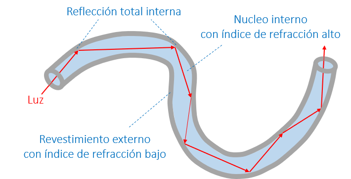

2. Ondas electromagnéticas en la materia
Contents
MEC501 - Manejo y Conversión de Energía Solar Térmica
2. Ondas electromagnéticas en la materia#
Profesor: Francisco Ramírez CueSvas
Fecha: 19 de Agosto 2022
Ecuaciones de Maxwell en un medio#
La materia esta compuesta por cargas (electrónes, átomos, moléculas). Por lo tanto, a diferencia del vacío, la densidad de carga (\(\rho\)) y de corriente (\(\vec{J}\)) eléctricas están presentes en las ecuaciones de Maxwell:
En general, existe un tercer término asociado con la polarización magnética del material. Sin embargo, en este curso veremos solo materiales paramagnéticos y, por lo tanto, este término será ignorado.
Asumiendo un medio homogéneo, y mediante la relación:
donde \(\vec{D}\) es el desplazamiento eléctrico, y \(\varepsilon = \varepsilon' + i\varepsilon''\), es la constante dieléctrica compleja;
podemos demostrar que las ecuaciones de Maxwell se pueden reescribir en la forma:
Estas ecuaciones tiene la misma forma que las ecuaciones de Maxwell en el vacío, y por lo tanto todas las conclusiones anteriores aplican a este caso.
La gran diferencia está en la relación de dispersión. En este caso:
donde \(N = \sqrt{\varepsilon} = n +i\kappa\), es el índice de refracción complejo. En general \(n\) se conoce como el índice de refracción, y \(\kappa\) como extinsión.
Notar que la velocidad de la onda también cambia a \(c = c_0/n\)
Igualmente la relación entre \(H_0\) y \(E_0\), es de la forma
donde \(Z_r = \sqrt{\frac{1}{\varepsilon}}\) es la impedancia relativa.
Notar que para materiales paramagnéticos,
\[\begin{equation*}Z_r = \sqrt{\frac{1}{\varepsilon}} = \frac{1}{N}\end{equation*}\]
¿Qué representa la constante dielectrica compleja?
Los materiales están compuestos de átomos, con un núcleo positivo y electrones negativos. Estos electrones interactúan con los átomos de distintas formas; algunos orbitan alrededor del núcleo mientras que otros se mueven libremente por el material. Así, podemos separar las cargas eléctricas en dos tipos: cargas ligadas, y cargas libres.

La interacción de las onda electromagnéticas con las cargas ligadas induce polarización, es decir, el nucleo y el electrón se polarizan, oscilando en sincronía con el campo externo. Esta respuesta está representada por la parte real de la constante dielectrica (\(\varepsilon'\)).

Las ondas electromagnéticas aceleran las cargas libres, generando corrientes eléctricas inducidas. Algunas cargas libres móbiles colicionan con otros electrónes o núcleos, disipando energía. Esta respuesta está representada por la parte imaginaria de la constante dieléctrica (\(\varepsilon''\)).
Esta discipación de energía está representada por la resistencia eléctrica, y es la reponsable de la generación de calor en metaeles.
De hecho, la conductividad eléctrica \(\sigma\) en la ley de Ohm, \(\vec{J} = \sigma\vec{E}\), está relacionada con la parte imaginaria de la constante dielectrica por:

¿Que significa que el vector de onda sea complejo?
Analicemos la solución general de la ecuación de onda:

Lo que notamos es, mientas que el índice de refracción \(n\) representa el cambio en la oscilación espacial de la onda, la extinsión \(\kappa\) indica un decaimiento en la amplitud.
En resumen, en materiales paramagnéticos:
\(\vec{E}\) y \(\vec{H}\) se comportan como ondas trasversales de la forma \(\propto e^{ i\left(\vec{k}\cdot\vec{r} - \omega t\right)}\).
La relación de dispersión esta dada por \(k = N\frac{\omega}{c_0},\) donde \(N = n + i\kappa\) es el índice de refracción complejo.
\(N =\sqrt{\varepsilon} =\sqrt{\varepsilon'+i\varepsilon''}\), donde \(\varepsilon\) es la constante dieléctrica
\(\vec{E}\) y \(\vec{H}\) se propagan a una velocidad constante \(c = c_0/n\)
\(\kappa\) representa la extinsión de la onda en el espacio.
\(\vec{E}\), \(\vec{H}\) y \(\vec{k}\) son mutuamente perpendiculares.
Las amplitudes de \(\vec{E}\) y \(\vec{H}\) están asociadas por la relación \({H}_0 = \frac{E_0}{Z_0Z_r}\), donde \(Z_r = \frac{1}{\sqrt{\varepsilon}}\).

Vector de Poynting#
El vector de Poynting, \(\vec{S}\), representa el flujo de energía electromagnética por unidad de área. Está dado por la relación:
donde \(\langle\cdots\rangle\) reprensenta el promedio en un periodo, y \(^*\) reprenta el complejo conjugado.
Consideremos, por ejemplo, el vector de Poynting para una onda plana que se propaga en un material con índice de refracción \(N = n+i\kappa\):
El término \(\alpha = \frac{4\pi\kappa}{\lambda}\) es el coeficiente de absorpción. El inverso, \(\delta = 1/\alpha\), se denomina profundidad superficial y representa la profundidad de penetración de la onda electromagnética en un material.
Como referencia, \(\delta\sim 1000\) m en fibras ópticas a \(\lambda = 1.55\) \(\mu\)m, que es la longitud de onda utilizada en comunicación óptica. Por otro lado, en metales como la plata, oro o aluminio, \(\delta\sim 10\) nm para \(\lambda \sim 500\) nm (espectro de luz visible)
Condiciones de borde#
Hasta ahora hemos revisado las ecuaciones de Maxwell en un medio homogeneo, y como estas dan lugar a la solución en forma de ondas electromagnéticas.
Recordemos que para un medio con índice de refracción \(N\), la solución general es:
\[\begin{align*} \vec{E} &= E_0 e^{i\left(Nk_0\hat{k}\cdot\vec{r} - \omega t\right)} \hat{e} \\ \vec{H} &= \frac{NE_0}{Z_0} e^{i\left(Nk_0\hat{k}\cdot\vec{r} - \omega t\right)} \hat{k}\times\hat{e} \end{align*}\]
¿Que sucede cuando una onda electromagnética encuentra la frontera entre dos medios distintos?
Como toda ecuación diferencial, la solución particular de las ecuaciones de Maxwell está definida por las condiciones de borde. Estas condiciones de borde surgen al aplicar las ecuaciones de Maxwell en una frontera (cuya derivación no revisaremos aqui). En general son 4 condiciones de borde. Sin embargo, para los problemas que veremos en este curso solo se necesitan dos:
donde \(1\) y \(2\) son dos medios distintos, y el símbolo \(\parallel\) representa la componente paralela a la interface entre los medios \(1\) y \(2\)
En la interface entre dos medios \(1\) y \(2\) las componentes de \(\vec{E}\) y \(\vec{H}\) paralelas a la interface, se conservan.
Reflexión y transmisión de ondas electromagnéticas en una interface#
Coeficientes de Fresnel#
Consideremos el fenómeno de reflección y transmissión de una onda electromagnetética en dirección \(\hat{k}_i\) que incide sobre la interface entre dos medios 1 y 2, con índices de refracción reales \(n_1\) y \(n_2\), respectivamente
Definimos como \(\hat{n}\) al vector normal al plano de interface entre los dos medios, y como plano de incidencia, al plano formado por los vectores \(\hat{k}_i\) y \(\hat{n}\).
La dirección de la onda reflejada y transmitida está definida por los vectores \(\hat{k}_r\) y \(\hat{k}_t\), respectivamente.

A partir de la dirección de \(\vec{E}\) y \(\vec{H}\) respecto al plano de incidencia, podemos distunguir dos polarizaciones:
Si \(\vec{H}\) oscila en dirección perpendicular al plano de incidencia, hablamos de una polarización transversal magnética o TM.
Si \(\vec{E}\) oscila en dirección perpendicular al plano de incidencia, hablamos de una polarización transversal eléctrica o TE.
Como ejemplo, consideremos una onda transversal magnética (TM)

La figura muestra la reflexión y transmisión de la onda visto desde el plano de incidencia
A través de las ecuaciones de Maxwell, podemos establecer la solución general para cada onda electromagnética:
donde:
Reemplazando en las soluciones generales,
De igual forma, a partir de la relación \(\vec{H} = \frac{E}{Z_0Z_r}\left(\hat{k}\times\hat{e}\right)\),
A partir de la condición de borde en la interface \(z =0\):
Tenemos:
Dado que esta ecuación se debe satisfacer para cualquier punto \(x\), los exponentes debe ser iguales:
Esto nos lleva a las leyes de Snell, para reflexión y transmisión:
Finalmente, la condición de borde del campo eléctrico queda:
De igual forma, de la condición de borde \(H^{\parallel}_1 - H^{\parallel}_2 = 0\), deducimos:
A partir de estas dos ecuaciones, determinamos los coeficientes de Fresnel de reflexión (\(r_\mathrm{TM}\)) y transmisión (\(t_\mathrm{TM}\)) para una onda TM:
Similarmente, para una onda transversal eléctrica (TE), los coeficientes de Fresnel son:
Las relaciones para los coeficientes de Fresnel se mantienen para índices de refracción complejos. En este caso, solo debemos reemplazar \(n_1\) por \(N_1\), y \(n_2\) por \(N_2\)
Reflectividad y transmisividad#
Los coeficientes de Fresnel permiten determinar la magnitud del campo eléctrico (y magnético) reflejado y transmitido por una interface. Para determinar el flujo de energía a través de la interface, utilizamos el vector de Poynting. En el caso de la onda \(\mathrm{TM}\), y considerando indices de refracción complejos en los medios 1 y 2:
La reflectividad (\(R\)) y transmissivitdad (\(T\)) se definen, repectivamente, como el flujo de energía reflejada y transmitida relativa al flujo de energía incidente, y en dirección normal a la interface.
Así, considerando la componente del vector de Poynting normal a \(\hat{n}\) (notar que \(\hat{n} = - \hat{z}\) en nuestro ejemplo), tenemos:
De igual forma, para una onda TE, tenemos
Notar que por conservación de energía:
Casos particulares#
Asumiendo dos medios 1 y 2, con índice de refracción real, analicemos la reflectancia en función del ángulo de incidencia:
caso 1, \(n_1 < n_2\)
caso 1, \(n_1 > n_2\)
import numpy as np
import matplotlib.pyplot as plt
from empylib.fresnel import interface
theta = np.linspace(0,90,100) # Ángulo de incidencia
# Reflectividad en una interface
Rp = lambda n1,n2 : interface(theta,n1,n2)[0] # TM
Rs = lambda n1,n2 : interface(theta,n1,n2)[4] # TE
# preparamos el ploteo
def plot_R_interface(n1,n2):
fig, ax = plt.subplots()
fig.set_size_inches(9, 6)
plt.rcParams['font.size'] = '18'
ax.plot(theta,Rp(n1,n2), label='$R_\mathrm{TM}$', color='red')
ax.plot(theta,Rs(n1,n2), label='$R_\mathrm{TE}$',color='blue')
ax.set_xlim([0,90])
ax.set_ylim([0,1.0])
ax.set_xlabel('Ángulo de incidencia (°)')
ax.set_ylabel('Reflectividad')
ax.legend(frameon=False)
---------------------------------------------------------------------------
ModuleNotFoundError Traceback (most recent call last)
/tmp/ipykernel_663/3392137778.py in <module>
1 import numpy as np
2 import matplotlib.pyplot as plt
----> 3 from empylib.fresnel import interface
4
5 theta = np.linspace(0,90,100) # Ángulo de incidencia
ModuleNotFoundError: No module named 'empylib'
from ipywidgets import interact
@interact( n1=(1,5, 0.1), n2=(1,5, 0.1))
def g(n1=1.0, n2=1.5):
return plot_R_interface(n1,n2)
Cuando \(n_1 < n_2\) vemos que \(R_\mathrm{TM} = 0\) en un cierto ángulo. Este ángulo se denomina ángulo de Brewster. En este ángulo solo la componente TE es reflejada.
Los lentes polarizados toman ventaja del ángulo de Brewster. Estos lentes están diseñados para bloquear las ondas TE, y de esta forma reducir el brillo enceguecedor generado por la reflección de la luz solar

Así, si giramos los lentes en posición vertical (asumiento lentes con alto nivel de polarización), el efecto se invierte. Es decir, las ondas TE se transmiten y las TM no.
Por otro lado, cuando \(n_1 > n_2\), vemos que \(R_\mathrm{TM} = R_\mathrm{TE} = 0\) sobre cierto ángulo. Este ángulo se denomina ángulo crítico (\(\theta_c\)). Para deterinar el ángulo crítico usamos la ley de Snell.
El ángulo máximo para la onda transmitida es \(\theta_t = 90^o\), la ley de Snell nos indica que existe un ángulo crítico. Sobre este valor, no existe solución real.
Para \(\theta_i > \theta_c\), \(R_\mathrm{TE} = R_\mathrm{TM} = 1\).
Este mecanismo se llama reflección interna total y es la base para el funcionamiento de fibras ópticas y lasers 
{kind=link}
Reflección y transmissión en películas delgadas#
En el caso materiales de película delgada, las ondas electromagnéticas se reflejan y transmiten múltiples veces.

Considerando los medios 1,2 y 3, ordenados consecutivamente en dirección de la onda incidente, se puede demostrar que en este caso los coeficientes de Fresnel, para indices de refracción reales son:
donde \(\varphi_2 = N_2k_0\cos\theta_i\); \(r_{12}\), \(r_{23}\) y \(t_{12}\), \(t_{23}\) son, respectivamente, los coeficientes de Fresnel desde el medio 1 al medio 2, y desde el medio 2 al medio 3. Estas fórmulas son válidas tanto para ondas TE como para ondas TM.
Basado en estas expresiones, podemos calcular la reflectividad y tranmissividad de la película:
Analicemos como se comportan estas ecuaciones en un caso real.
Como ejemplo, consideremos la reflectividad de una película delgada de sílice (SiO\(_2\)) sobre un sustrato de silicio. Esta capa se genera naturalmente debido a la oxidación del silicio

Para simplificar, consideremos:
índice de refracción del aire: 1.0
índice de refracción de sílice: 1.5
índice de refracción del silicio: 4.3
espectro de longitudes de onda: 300 - 800 nm (visible)
espesor del sílice, \(d\): variable
ángulo de incidencia \(\theta_i\): variable
import numpy as np
import matplotlib.pyplot as plt
from empylib.fresnel import multilayer
# Reflectividad en capa delgada
lam = np.linspace(0.3,0.8,100) # longitud de onda (en um)
n_layers = (1.0,1.5,4.3) # índices de refracción n1, n2, n3
Rp = lambda tt,d : multilayer(lam, tt,n_layers, (d,), 'p')[0]
Rs = lambda tt,d : multilayer(lam, tt,n_layers, (d,), 's')[0]
# preparamos el ploteo
def plot_R_multi(theta,d):
fig, ax = plt.subplots()
fig.set_size_inches(9, 6)
plt.rcParams['font.size'] = '16'
ax.plot(lam,Rp(theta,d), label='$R_\mathrm{TM}$', color='red')
ax.plot(lam,Rs(theta,d), label='$R_\mathrm{TE}$',color='blue')
ax.set_xlim([min(lam),max(lam)])
ax.set_ylim([0,1.0])
ax.set_xlabel('Longitud de onda ($\mu$m)')
ax.set_ylabel('Reflectividad')
ax.legend(frameon=False)
from ipywidgets import interact
@interact(theta=(0,89,10), d=(0,1.0,0.01))
def g(theta=30, d=0.3):
return plot_R_multi(theta,d)
Esta oscilaciones en la reflectancia al variar \(\theta_i\) y \(d\) son el resultado de la interferencia entre las ondas reflejadas en la parte inferior y superior de la película de silicio.

En palabras simples, este fenómeno ocurre por qué la onda reflejada en la parte inferior de la película debe recorre un camino más largo. Esto produce un desface con las ondas reflejadas en la parte superior que deriva en interferencia constructiva (alta reflectividad) y destructiva (baja reflectividad)
Este fenómeno se manifiesta en forma de color ya que nuestros ojos son sensibles a los cambios de radiación en este espectro.
Analicemos como se manifiesta este fenómeno en forma de color:
import numpy as np
import matplotlib.pyplot as plt
from empylib.fresnel import multilayer
from empylib.ref_spectra import AM15
from empylib.ref_spectra import color_system as cs
cs = cs.hdtv
# Reflectividad en capa delgada
lam = np.linspace(0.3,0.8,81) # longitud de onda (en um)
n_layers = (1.0,1.5,4.3) # índices de refracción n1, n2, n3
Rp = lambda tt,d : multilayer(lam, tt,n_layers, (d,), 'p')[0]
Rs = lambda tt,d : multilayer(lam, tt,n_layers, (d,), 's')[0]
def color_R_film(d):
# formateamos la figura
fig, ax = plt.subplots()
fig.set_size_inches(9, 5)
plt.rcParams['font.size'] = '16'
AM15_spectra = AM15(lam)
theta = np.linspace(0,90,100) # angulo de incidencia
for i in range(len(theta)):
R = 0.5*Rp(theta[i],d) + 0.5*Rs(theta[i],d)
Irad = R*AM15_spectra
html_rgb = cs.spec_to_rgb(lam, Irad, out_fmt='html')
ax.axvline(theta[i], color=html_rgb, linewidth=6)
ax.set_xlim([min(theta),max(theta)])
ax.set_ylim([0,1.0])
ax.axes.yaxis.set_visible(False)
ax.set_xlabel('Ángulo de incidencia (deg)')
---------------------------------------------------------------------------
ModuleNotFoundError Traceback (most recent call last)
/tmp/ipykernel_449/40721585.py in <module>
1 import numpy as np
2 import matplotlib.pyplot as plt
----> 3 from empylib.fresnel import multilayer
4 from empylib.ref_spectra import AM15
5 from empylib.ref_spectra import color_system as cs
ModuleNotFoundError: No module named 'empylib'
from ipywidgets import interact
@interact(d=(0,1.0,0.001))
def g(d=0.28):
return color_R_film(d)
Referencias#
Griffths D., Introduction to Electrodynamics, 4th Ed, Pearson, 2013
7.3 Maxwell’s Equations (7.36)
9 Electromagnetic Waves (9.3 y 9.4)